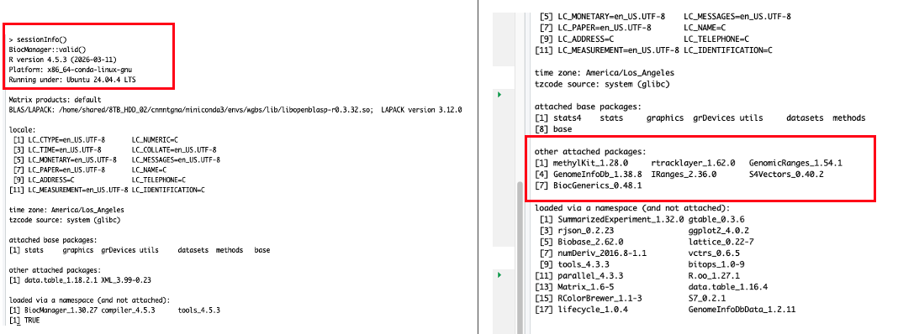

Patience Please…
Plan of the Week: April 6 - April 12, 2026
High- level outline for the week. Adjusted daily to reflect progress of the day before
- This week is all about biomarkers and methylation.
Monday - Methylation,
methylKitrunTuesday - UW-RUA, biomarkers
Wednesday - Biomarkers
Thursday - Biomarkers
Friday - Task management & ferry to FH/ Yellow
Saturday - Yellow Island Surveys
Sunday - Yellow Island Surveys
Plan of the Day

Granular level task list to accomplish the high- level goal outlined above
- My primary goals for today are as follows:
- Fix my RStudio/ R updates that crashes my local machine before it gets the printer treatment…
- Get
methylKitloaded in Raven or open an issue for help - Biomarker drafting
Projects Touched Today
- Mussel Methylation
Progress Notes
- I left off yesterday making a mess in R and RStudio. My local machine caught me slipping and I updated the working R version when switching between projects. Cue the BS.
- To add insult to injury, I was already making an installation mess in Raven, so I wrapped up, made my notes, and considered leaving my laptop out in the rain…
- A little sleep and a timer made all of the difference. First, I uninstalled and then re-installed R and then RStudio and fixed my local machine issue.
- I also disabled my
.RDataand any.Rprofiledocs temporarily until I can figure out what I setup that keeps making a mess in my stuff!
- I pivoted to some UW-RUA traveler tasks that are time sensitive before returning to fixing my software.
- Returning to Raven and the
methylKitinstall from hell…- During my working block with KPJ, I decided to go back with fresh reasoning and install
methylKitsince I’d done some clear- headed thinking about the issues and Kristin is a great resource for coding conundrums. - First, working through all of the options back to back yesterday clouded my goal. The goal is to get the correct versions of
BiocManagerandmethylKitinstalled so I can keep moving forward with the analysis. - I verified I was in my
bio-clienvironment to prevent competing versions of R, and maximize capabilities in my micromamba ‘container’ of sorts, akabio-cli. Once I activated that, I navigated to R in terminal, verified the version (4.3.3), verified where my R libraries are located, and my working directory:
- During my working block with KPJ, I decided to go back with fresh reasoning and install
[1]"/home/shared/8TB_HDD_02/cnmntgna/R/x86_64-pc-linux-gnu-library/4.2"[2]"/home/shared/8TB_HDD_02/cnmntgna/micromamba/envs/bio-cli/lib/R/library"
[1] "/home/shared/8TB_HDD_02/cnmntgna"
- I then went back to the BiocManager documentation, verified the version should be 3.18, not 3.16 (which I was trying yesterday) for R versions 4.3.x. I then crossed my fingers and watched the install…
Trying to solve an installation or actual coding problem 99.999999999999% requires me to take a step back and identify - out loud - what I am actually trying to do before accessing the internet! I lost a few hours yesterday trying to jump into the middle to fix something I already laid a foundation for. Go back to the basics…
Moving on…
BiocManagerinstalled and version 3.18 verified.methylKitfailed.Error: object ‘key<-’ is not exported by 'namespace:data.table' Execution haltedRemembering to go back to the basics… I checked my paths, my working directories, and the
methylKitdocumentation in the al2na GitHub repo. Even in my updated environment, R version 4.2 is overrunning 4.3 - what a bully. So I will fix that, and then thedata.tableissue.Working with KPJ, I created new directories in my environment that are exactly the same except they terminal in 4.3 instead of 4.2, and re-pointed my environment to chose the newer libraries…
Next hurdle - the
data.tablepackage is too new- it is 1.18.2.1. Installed the older 1.16.4 version successfully.
find.package("data.table") packageVersion("data.table")
[1] "/home/shared/8TB_HDD_02/cnmntgna/R/x86_64-pc-linux-gnu-library/4.3/data.table" [1] ‘1.16.4’
Now, for
methylKit… to fail. Segmentation fault (core dumped)… sounds egregious. More troubleshooting.Halfway through trying to understand the error message, Kristin and I remembered we have this really nice conda/ mamba environment. So, I found the Bioconda GitHub page with instructions to install via my
micromambaenvironment.Helpful within that is the compatible versions list of the gazillion packages needed for this program.
rtracklayerwas the next culprit, so installing and loading that, version 1.62.0, finally opened the door tomethylkit version 1.28.0. I am rating this escape room 0/10.
Now for the true test- the code in the markdown.
- Which failed.
After knocking out some UW-RUA tasks, I returned with a fresh set of eyes.
Problem 1 - no matter how many times (or ways) I set my working directory or activate my working environment, the markdown is fighting me.
Problem 2 - my launch/
.Renviron/.Rhistoryfiles are in a fight to pull me into insanity.Fixing problem 2 first will hopefully solve have the fight.
I became a recursive remover with impunity! I suspect the repeat attempts and fails created a bunch of mixed signals.
I did that because in my documentation perusal, I found that while
condaandmambaare discussed kind of interchangeably, they are companions, not options - this helped me clarify my primary conflict - several ‘environments’ that could be one.Once I renamed my old history and environment files, I changed my global options in R to stop loading from the previous session, restarted and followed the bioconda instructions to get my tools in one environment.
I now have a
wgbsenvironment - outside of the methylation project - that I can use for this work and all subsequent projects. The environment includes the QC and alignment tools as well. I am very pleased!- It did activate within the markdown once I rendered the markdown as quarto & now my next step is to fix the actual coding errors I have created by modifying the chunks to test against the other environments and workarounds I attempted earlier today.

Outcomes: Products & Word Count
- WGBS environment!
Today’s total: 0 words
Monthly total to date: 4420 words
Annual total to date: 37,093 words
Annual target total to date: 50,500 words
Next Up: Tomorrow’s Plan
- UW-RUA and biomarker edits.